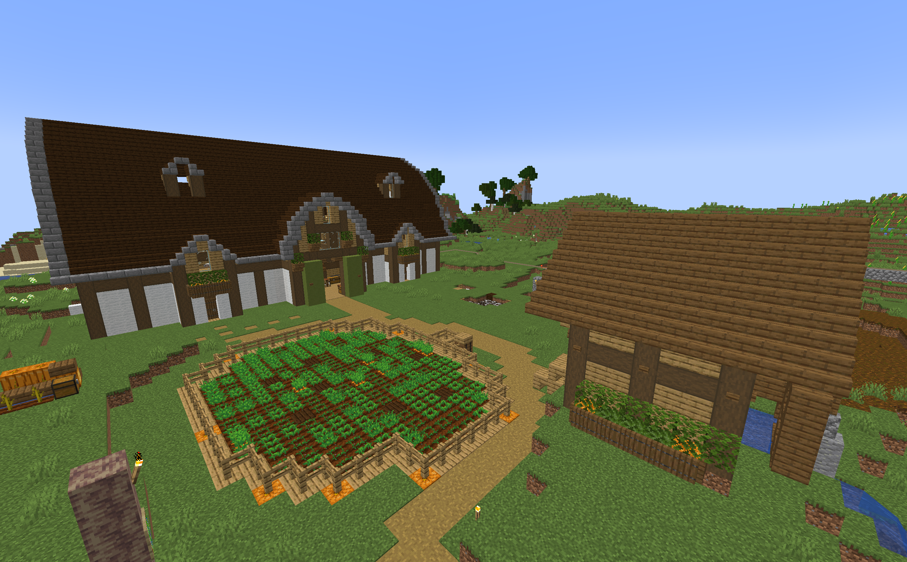
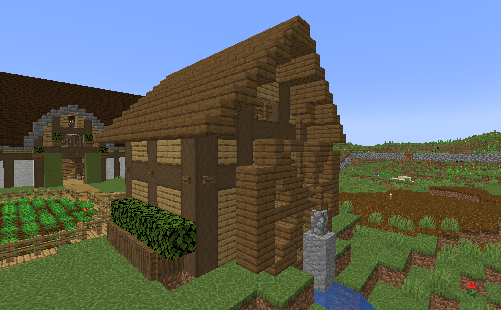
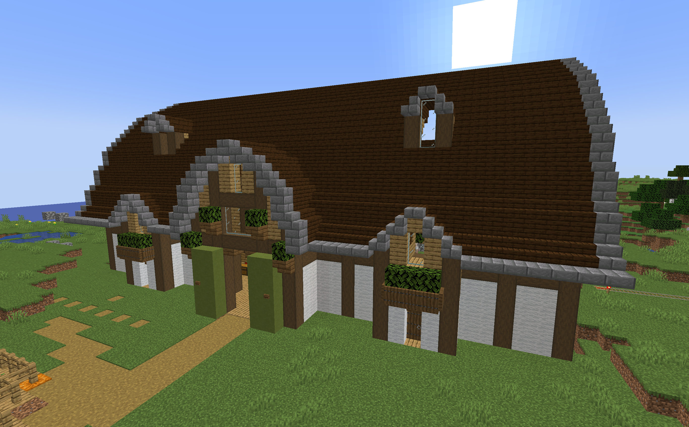
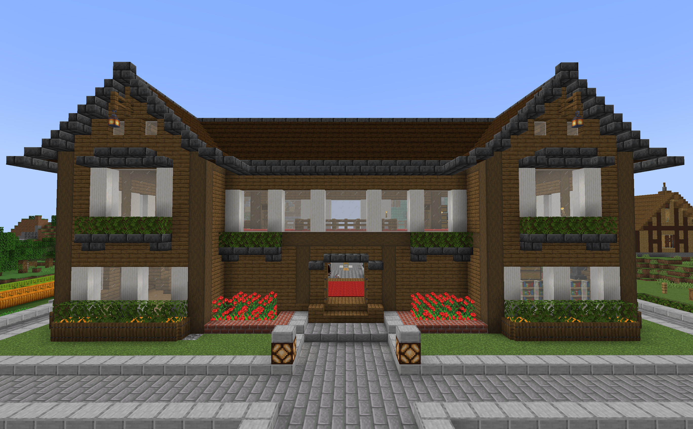
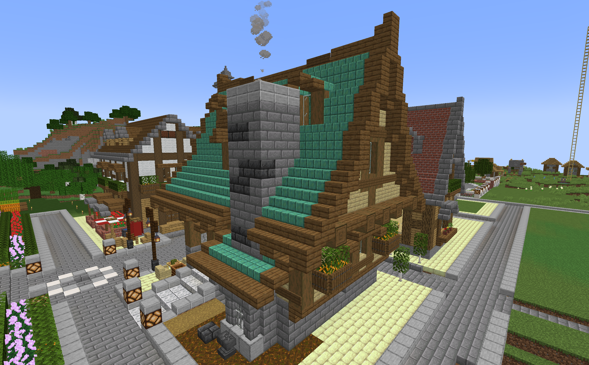
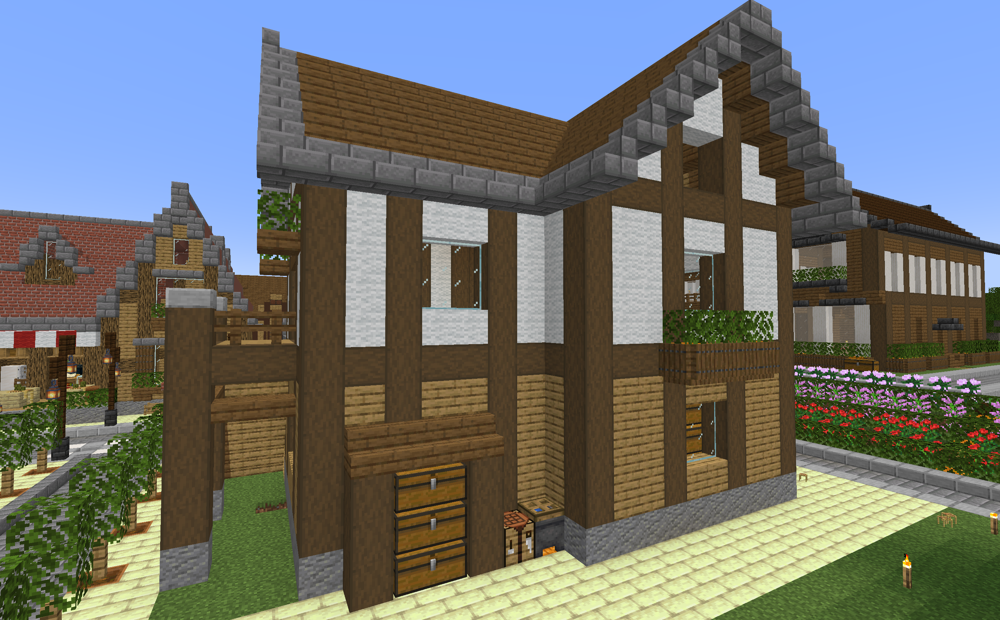
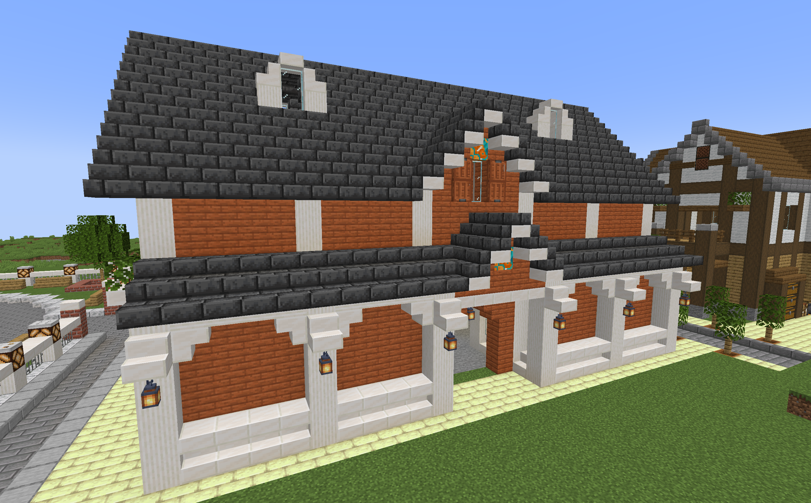
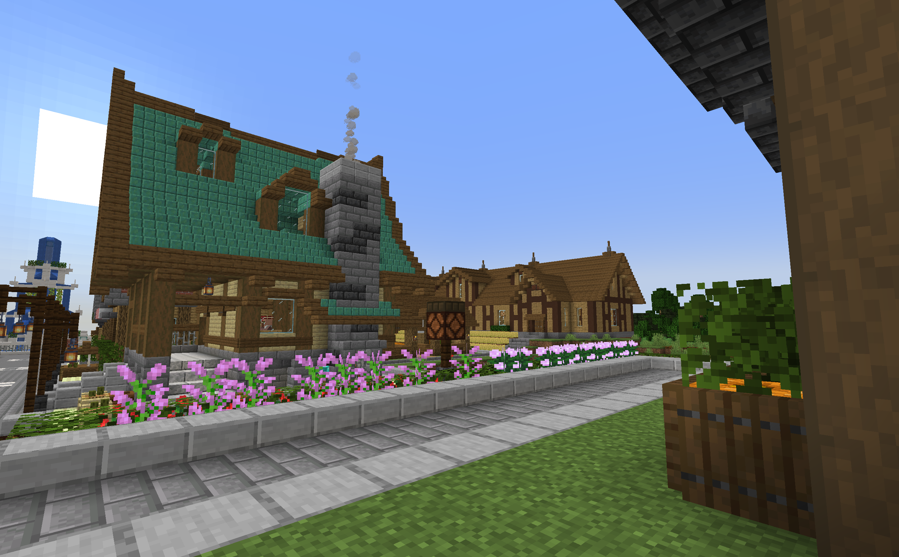
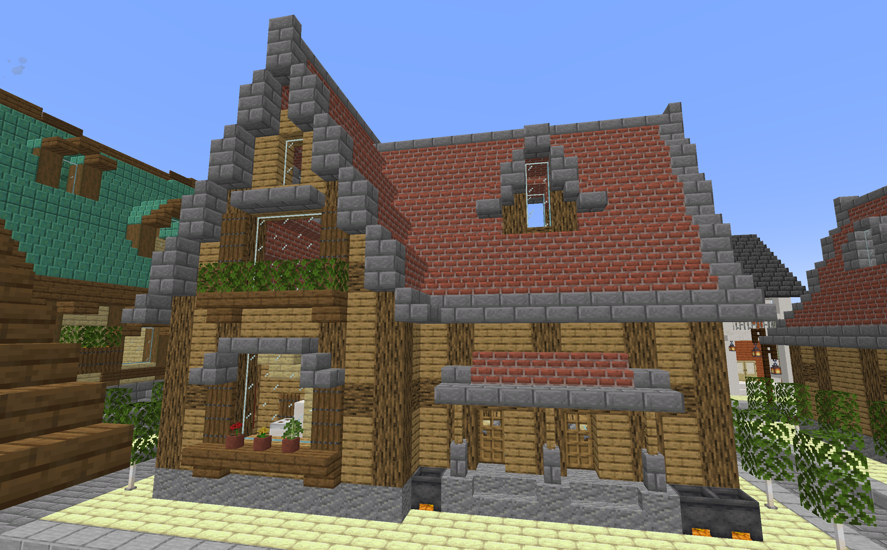
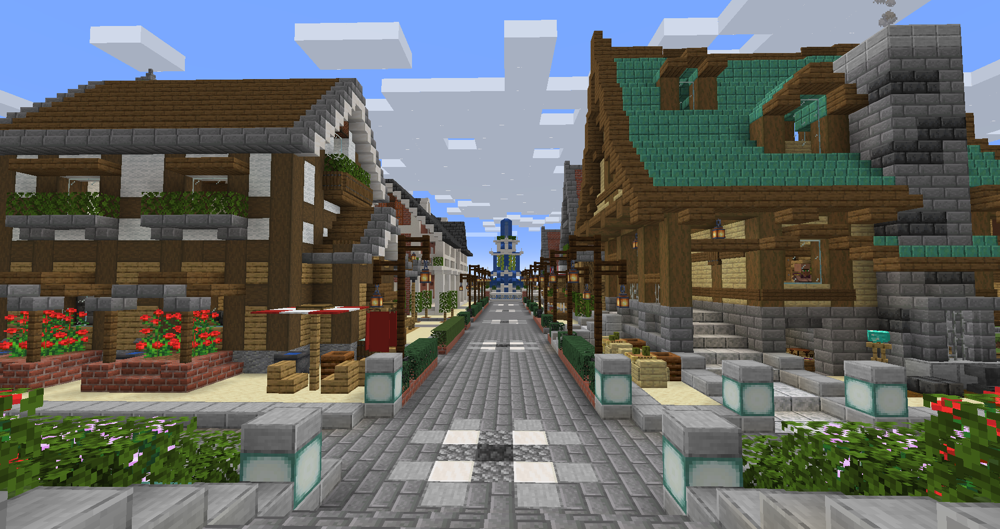

第一拠点
全体図

ゲーム始めたての時に生活の安定を図るために発展させた拠点です。割とすぐ第二拠点に移動したので建築物は少ないです。
仮拠点
正面図：フル木材での建築です。2階に小さいバルコニーも作りました。

背面図：水車を表現したかった。後ろにちらっと写っているのは羊牧場です。
羊牧場
正面図：壁に羊毛を使いました。

斜視図：後ろと横を作っていないので斜めから。
第二拠点(洋風エリア)
全体図

洋風の街並みを目指して開発している拠点です。
本拠点
正面図：本拠点の洋館で、実在する旧川崎庭園を参考にしています。カッコいい。

背面図：扉を立てず開放的にして行き来を楽にしています。
鍛冶屋
正面図：ver.1.17で登場した銅ブロックを屋根に使っています。

背面図：レゴブロックの鍛冶屋を参考にしました。
石工の家
正面図：よくある木造建築という感じです。

背面図：マイクラのテンプレみたいな建築になりました。
製図家の家
正面図：取引のために製図家の家を作りたくて、紙ということで富岡製糸場をモチーフに作りました。

背面図：裏側の造形も気に入っています。
植林場
正面図：オークの植林場です。大きめの建築になりました。

背面図：シルエットがかっこよくて気に入っています。
カフェ
正面図：屋根にレンガを使ってみましたが、使い方が難しかったです。

背面図：裏側には従業員の出入り口を作っています。
噴水公園
正面図：とても気に入っている大きめの噴水です。カッコいい。

背面図：夜景も映えます。